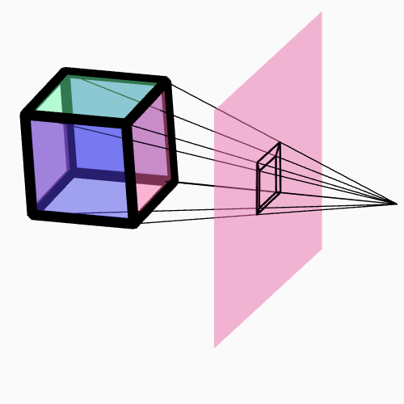

Instructions for you to follow in this document will be highlighted in blue.
Don't forget to cite your sources!
Orthographic projection doesn't reflect how we see things here in three dimensional space. With orthographic projection, the light rays we see travel parallel to each other. In reality, the light rays we see all pass through what is roughly a single point in our eyes.

You can see a comparison of orthographic and perspective cameras' view regions here. (use the O and P keys)
This makes the math a little bit trickier, since this is no longer a linear transformation, but we can avoid most of the complication by locating the camera at the origin. However, we do need to introduce a new concept: the image plane (or picture plane)
. Complete the following:
project(v) which takes in a THREE.Vector3 and returns a new THREE.Vector3 with the coordinates of the intersection point you figured out.
Recall:
- To create a Vector3, use the code
new THREE.Vector3(x,y,z)- You can get the contents of a Vector3
vusingv.x,v.y, andv.z, or get the whole thing as an array withv.toArray()
draw_ortho function to create a draw_persp which applies project before drawing.
draw_ortho with calls to draw_persp in your HTML.
v is a THREE.Vector3, then you can add another vector w to it with v.add(w). The more you shift, the less distorted the image will look, but it will also look smaller. You can make it larger by adjusting your convert_x_graph_to_canvas and convert_y_graph_to_canvas functions.
Real 3d renderers only draw lines and planes within a specific region. You can see these regions visualized here. (Use the O and P keys to switch between orthographic and perspective projections.) These camera regions are called viewing frustums. While it's easy enough to detect if a vertex is within these regions or not, we would need to cut our lines and triangles off when they leave the camera region, which is easy but a nuisance.
convert_x/y_graph_to_canvas.
Don't forget to cite your sources and be careful about licensing!